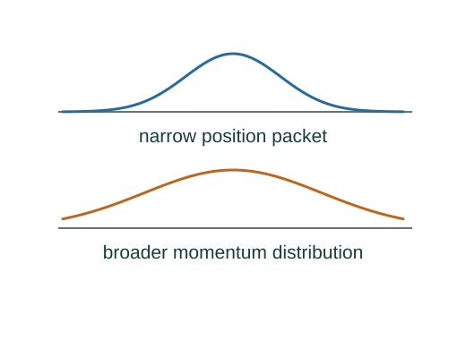

Schrödinger dynamics, matter waves and the uncertainty bound
For a particle, kinetic energy is represented by −ℏ²∇²/(2m), and potential energy by multiplication by U. The time-dependent Schrödinger equation is a foundational model equation.
What the symbols mean
Ψ: wavefunction; Ĥ: Hamiltonian operator; px = −iℏ∂/∂x; Δ: standard deviation, not instrument error.
When this applies
Nonrelativistic quantum mechanics with normalized states and suitable differentiability and boundary decay. The dynamics and operator assignments are explicit quantum inputs.
Developing the argument

State the quantum dynamical input
For a particle, kinetic energy is represented by −ℏ²∇²/(2m), and potential energy by multiplication by U. The time-dependent Schrödinger equation is a foundational model equation.
Separate a stationary state
Insert Ψ(x,t) = ψ(x)exp(−iEt/ℏ). The common time factor cancels, giving the one-dimensional stationary equation.
Apply momentum to a plane wave
A plane wave exp(ikx) is a momentum eigenstate: applying −iℏ∂x returns ℏk times the same state. Since one wavelength advances phase by 2π, p = ℏk = h/λ.
Use the commutator uncertainty theorem
Cauchy–Schwarz applied to (x − ⟨x⟩)Ψ and (px − ⟨px⟩)Ψ yields ΔxΔpx ≥ |⟨[x,px]⟩|/2. Direct differentiation gives [x,px]Ψ = iℏΨ.
Conserve scattering probability
For a real stationary potential the probability current is constant. An incoming particle is either reflected or transmitted; dividing the two outgoing currents by the incoming current makes their fractions add to one.
A worked example
A Gaussian can attain the precise standard-deviation bound ℏ/2. A rough order-of-magnitude statement often suppresses this factor.
Derivation behind this calculation ↗A point to keep straight
The textbook uses an order-scale uncertainty expression. For standard deviations the rigorous lower bound is ℏ/2, not ℏ.
Check the assumptions and derivation ↗